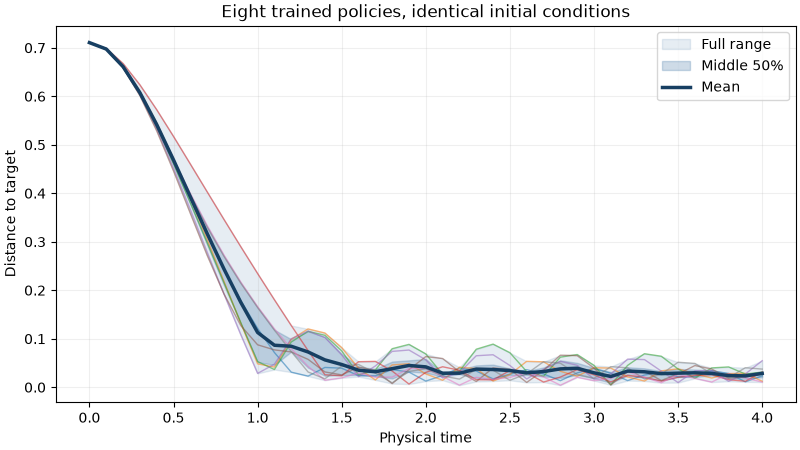

Note
Go to the end to download the full example code.
Batch train eight policies#
Train eight independent policies, then compare them from identical initial
conditions. Every batch uses jax.vmap. Each policy has separate parameters,
optimizer state, training environments, and random keys.
Run from the repository root:
python -m pip install -e '.[rl]' matplotlib
python examples/batched_policy_training_guide.py
See Intro to JaxDEM reinforcement learning for the environment and Proximal Policy Optimization (PPO) algorithm. This guide uses the same small navigation task.
1. Configure one trainer#
Each policy trains with 32 environments. All eight policies use the same
architecture and optimizer settings. One action spans 50 physics steps.
The template prepares the static configuration outside vmap.
from dataclasses import replace
from pathlib import Path
import tempfile
import jax
import jax.numpy as jnp
import matplotlib.pyplot as plt
import numpy as np
import optax
from flax import nnx
import jaxdem.rl as rl
from jaxdem import utils
from jaxdem.rl.trainers.ppo_trainer import PPOTrainer
num_policies = 8
num_envs = 32
num_epochs = 64
skip_frames = 49
evaluation_steps = 40
env = rl.Environment.create(
"single_navigator",
min_box_size=4.0,
max_box_size=4.0,
max_steps=2000,
friction=2.0,
action_alpha=1.0,
)
action_space = rl.ActionSpace.create("max_norm", max_norm=3.0)
def make_model(key):
return rl.Model.create(
"SharedActorCritic",
key=nnx.Rngs(key),
architecture=[32, 32],
observation_space_size=env.observation_space_size,
action_space_size=env.action_space_size,
action_space=action_space,
)
template = rl.Trainer.create(
"PPO",
env=env,
model=make_model(jax.random.key(0)),
key=jax.random.key(1),
optimizer=optax.adam,
learning_rate=3e-3,
num_envs=num_envs,
num_steps_epoch=32,
num_epochs=num_epochs,
skip_frames=skip_frames,
num_minibatches=16,
minibatch_size=256,
ppo_entropy_coeff=1e-4,
ppo_value_coeff=0.5,
)
_, template_optimizer = nnx.merge(template.graphdef, template.graphstate)
2. Initialize and train eight policies#
Share only the static graph and optimizer functions. vmap creates fresh
model parameters, optimizer state, environment resets, and keys per policy.
The training observation shape is (8, 32, 1, 6):
policies, environments, agents, and features.
def initialize_policy(key):
model_key, reset_key, training_key = jax.random.split(key, 3)
model = make_model(model_key)
optimizer = nnx.Optimizer(model, template_optimizer.tx, wrt=nnx.Param)
graphdef, graphstate = nnx.split((model, optimizer))
assert graphdef == template.graphdef
training_env = template.env.reset(
template.env, jax.random.split(reset_key, num_envs)
)
return replace(
template, graphstate=graphstate, env=training_env, key=training_key
)
keys = jax.random.split(jax.random.key(42), num_policies)
batch = jax.jit(jax.vmap(initialize_policy))(keys)
@jax.jit
def train_epoch(current, epoch):
updated, _trajectory, metrics = jax.vmap(
PPOTrainer.epoch, in_axes=(0, None)
)(current, epoch)
return updated, metrics
# The Python loop advances time. ``vmap`` batches the independent policies.
# Each loss has shape ``(8,)``. Log only a few epochs to reduce synchronization.
for epoch in range(num_epochs):
batch, metrics = train_epoch(batch, jnp.asarray(epoch))
if epoch == 0 or (epoch + 1) % 16 == 0:
losses = np.asarray(metrics["loss"])
assert losses.shape == (num_policies,) and np.isfinite(losses).all()
print(f"Epoch {epoch + 1}: eight finite losses, mean={losses.mean():.5f}")
assert not bool(jnp.any(batch.env.system.collider.overflow))
Epoch 1: eight finite losses, mean=0.00230
Epoch 16: eight finite losses, mean=0.00018
Epoch 32: eight finite losses, mean=-0.00047
Epoch 48: eight finite losses, mean=0.00288
Epoch 64: eight finite losses, mean=0.00563
3. Run one environment per policy#
Reset one evaluation environment, then copy its complete state with vmap.
Positions, velocities, target, domain, and simulation time start equal.
Check every dynamic array, rather than only the initial distances.
common_start = env.reset(env, jax.random.key(202))
evaluation_envs = jax.vmap(lambda _: common_start)(jnp.arange(num_policies))
for leaf in jax.tree.leaves(evaluation_envs):
np.testing.assert_array_equal(leaf, np.broadcast_to(leaf[0], leaf.shape))
# Each policy uses its deterministic action in its own environment.
# ``scan`` advances time without resetting the episode. ``vmap`` pairs policy
# i with environment i. Thus differences come from the trained policies.
def evaluate_policy(trainer, start):
model, _optimizer = nnx.merge(trainer.graphdef, trainer.graphstate, copy=True)
model.eval()
def distance(current):
return jnp.linalg.norm(
current.state.pos_c[0] - current.env_params["objective"][0]
)
def step(current, _):
pi, _value = model(current.observation(current))
action = model.policy_output(pi)
current, _terminated, _truncated = utils.advance_action(
current, action, skip_frames=skip_frames
)
return current, distance(current)
final, distances = jax.lax.scan(step, start, None, length=evaluation_steps)
return jnp.concatenate((distance(start)[None], distances)), final
distances, final_envs = jax.jit(jax.vmap(evaluate_policy))(batch, evaluation_envs)
distances = np.asarray(distances)
assert distances.shape == (num_policies, evaluation_steps + 1)
assert np.isfinite(distances).all()
assert np.all(
np.asarray(final_envs.system.step_count) == evaluation_steps * (1 + skip_frames)
)
np.testing.assert_array_equal(distances[:, 0], np.repeat(distances[0, 0], num_policies))
print("Initial distance for all eight policies:", distances[0, 0])
print("Final distances:", np.round(distances[:, -1], 4))
Initial distance for all eight policies: 0.7106396034176938
Final distances: [0.0236 0.0124 0.0311 0.0313 0.0547 0.0272 0.0107 0.0374]
4. Plot the eight trajectories#
Thin lines show individual trajectories. The dark line shows their mean. The bands show the full range and middle 50% across the eight trajectories at each time. These are descriptive bands, not confidence intervals. All curves include the common starting point at time zero.
decision_interval = float(common_start.system.dt) * (1 + skip_frames)
time = np.arange(evaluation_steps + 1) * decision_interval
low, q25, q75, high = np.percentile(distances, [0, 25, 75, 100], axis=0)
fig, axis = plt.subplots(figsize=(8, 4.5), layout="constrained")
axis.fill_between(time, low, high, color="#326b9e", alpha=0.12, label="Full range")
axis.fill_between(time, q25, q75, color="#326b9e", alpha=0.24, label="Middle 50%")
axis.plot(time, distances.T, linewidth=1, alpha=0.55)
axis.plot(time, distances.mean(axis=0), color="#173f62", linewidth=2.5, label="Mean")
axis.set(
xlabel="Physical time",
ylabel="Distance to target",
title="Eight trained policies, identical initial conditions",
)
axis.grid(alpha=0.2)
axis.legend()
output_dir = Path(tempfile.mkdtemp(prefix="jaxdem-eight-policies-"))
plot_path = output_dir / "distance_to_target.png"
fig.savefig(plot_path, dpi=180)
np.savez(output_dir / "trajectories.npz", time=time, distances=distances)
print("Plot:", plot_path)
plt.show()

Plot: /tmp/jaxdem-eight-policies-5hhs5vbq/distance_to_target.png
Total running time of the script: (0 minutes 21.226 seconds)